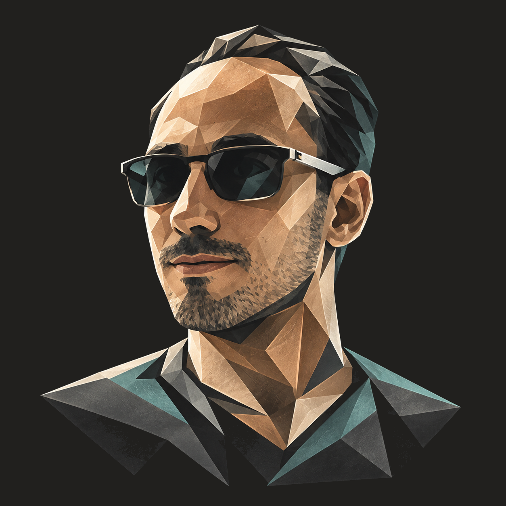

Victor Mendivil

People / Process / TechnologyMake the
complicated
workable.
I connect the people, processes and technology behind a problem — and help find a practical way forward.
Start with your problemIt doesn’t have to
stay this difficult.
Sometimes the problem isn’t a lack of effort. It’s the friction between how work happens and how the system expects it to happen.
Too much work done by hand.
Copying between spreadsheets. Re-entering the same information. Chasing a status that should already be visible. Repetition can hide the real work.
A useful starting pointMap one recurring task: where information begins, who touches it and what happens next. Then decide what is worth simplifying or automating.
The tool doesn’t fit the workflow.
A workaround becomes routine. People keep a second record outside the system. A tool that should help becomes another step to manage.
A useful starting pointFollow the work with the people doing it. Separate the actual requirement from the current workaround before deciding whether to adapt the tool, the process or both.
A Dynamics process is stuck.
A requirement is unclear, a handoff is missing or a change isn’t behaving as expected. The technical symptom may be only one part of the issue.
A useful starting pointTrace the process end to end in Dynamics 365 Finance & Operations: business intent, configuration, technical behavior and the teams needed to move it forward.
Understand the whole.
Make the next step clear.
I look at what people are trying to accomplish before jumping to a solution. The aim is a change that fits the work — and can be understood, tested and supported by the people around it.
Find the actual friction.
Listen to the people involved. Follow the process. Make the constraints and the desired outcome explicit.
Choose a workable change.
Turn the problem into a contained scope. Compare the practical options, including improving what is already there.
Carry it through.
Connect requirements, technical design, implementation and testing. Think about deployment and support before the handoff.
Experience beyond
the technical piece.
More than 15 years of employed experience, working across the delivery lifecycle and coordinating with different teams.
Requirements → design → implementation → testing → deployment → support.
Dynamics and ERP are a substantial part of that background. The broader thread is making people, process and technology work together.
This is experience context, not a portfolio of claimed freelance outcomes. Public case studies are not included in this concept.
What’s making
your work harder?
Start with the situation, not the solution. What keeps repeating? Where does the process stop? What would a better day look like?